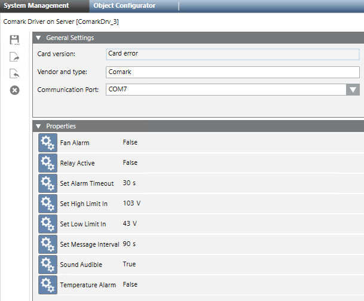

Comark Monitor Card Configuration Workspace
When you select the Comark monitor card node in System Browser, the following displays in the System Management tab.

You can configure the following parameters:
Deleting/Saving/Exporting/Importing the Comark Monitor Card Settings
The following icons are available in the toolbar commands of the System Management tab:
System Management Toolbar | ||
Icon | Name | Description |
| Delete Current Object | Deletes the current object. |
| Save As | Creates a copy or a new object from an existing one. |
| Export a Device | Exports the configuration data for the current device. |
| Import a Device | Imports the configuration data for the current device. |


You can:
- Delete the Comark monitor card node.
- Save the settings into another station thus creating a new Comark monitor card node.
- Export (and Import) the settings to/from an XML file in the Devices folder of your system project files.